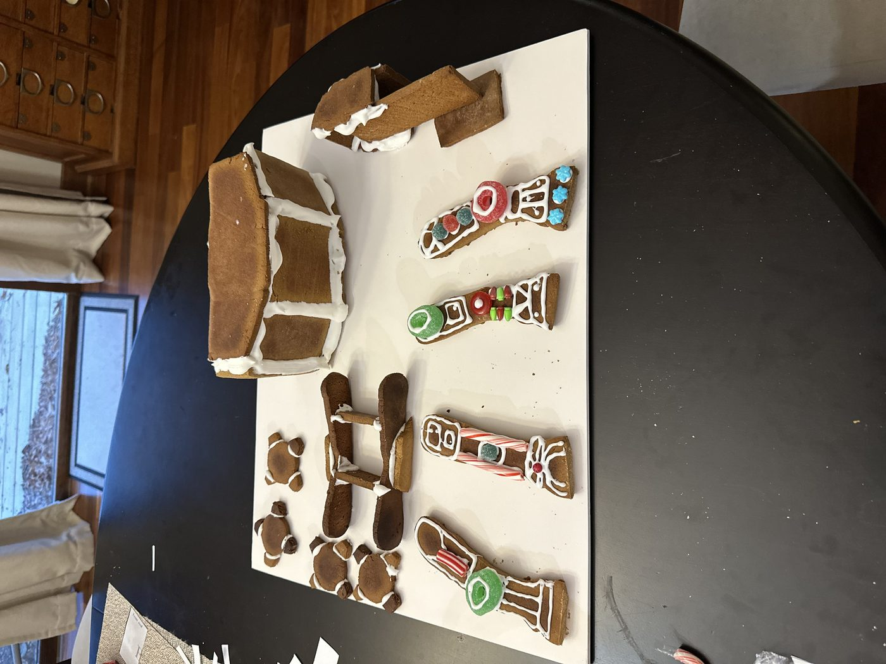
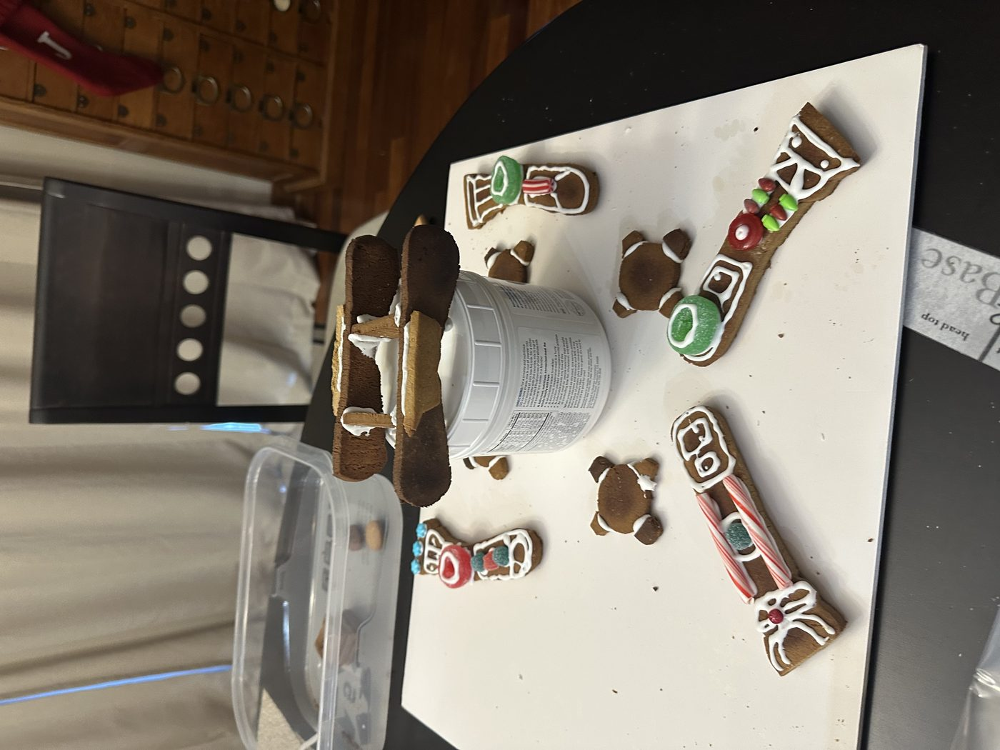
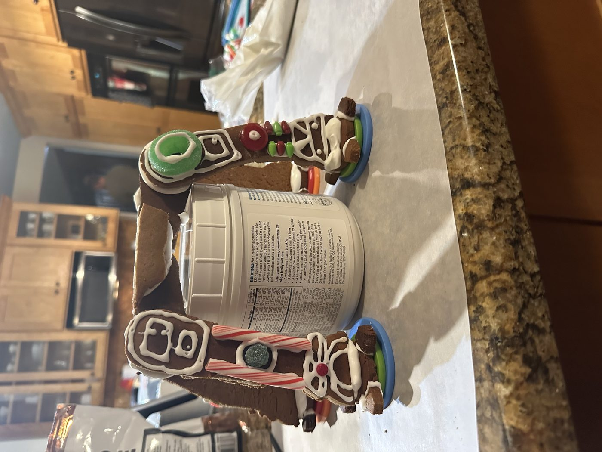
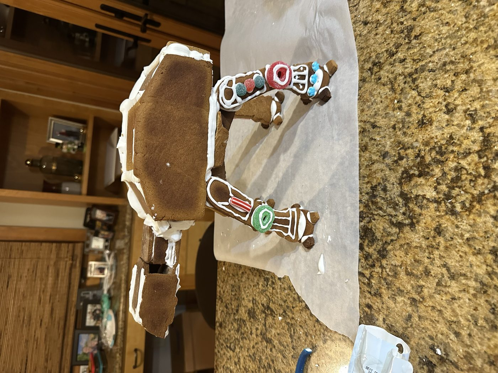
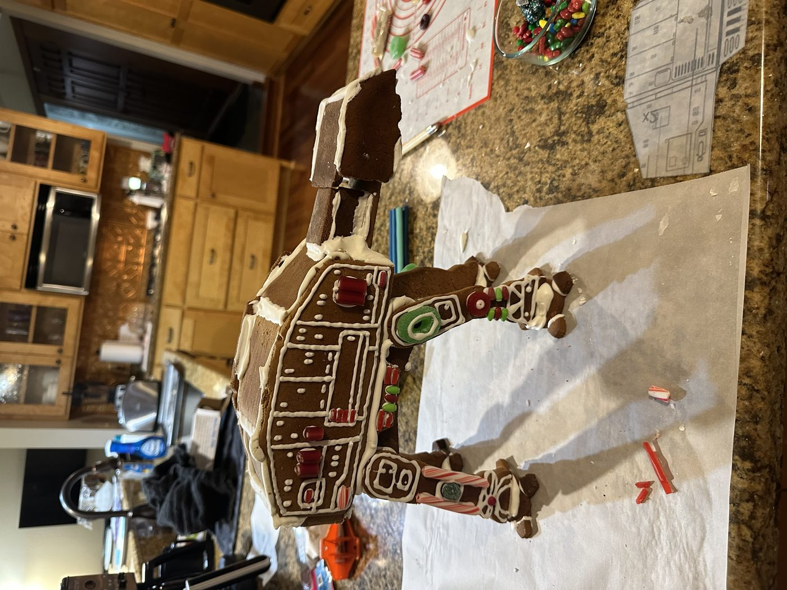
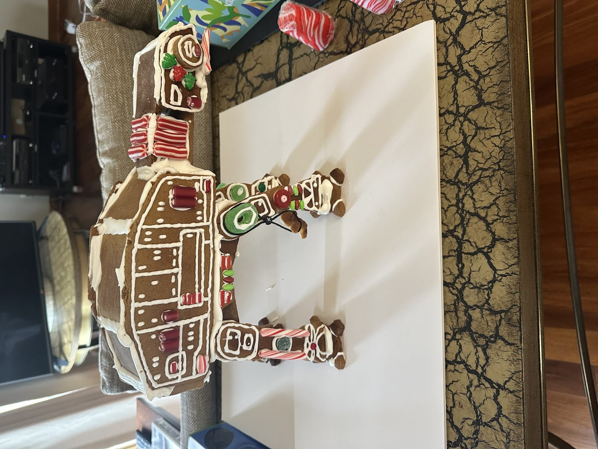
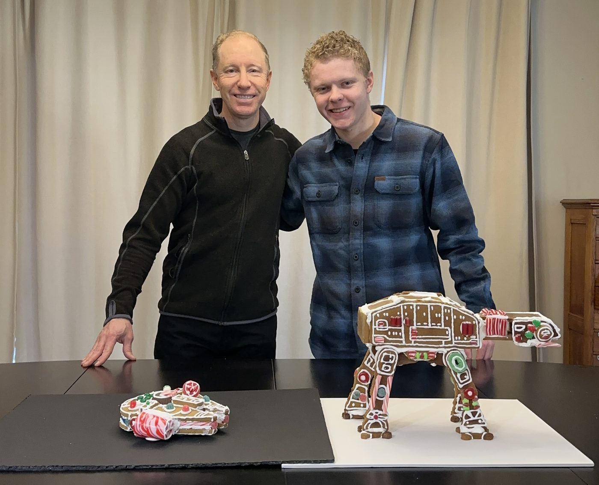

A Gingerbread AT-AT, From Scratch
Every year my family builds gingerbread houses. Last December I decided a house wasn't interesting enough, so I made the dough and icing from scratch, cut and baked every panel, and assembled a full 3D Star Wars AT-AT walker instead — standing on its own four legs, candy armor and all.

The Build
An AT-AT is basically a box on four legs, which sounds simple until you're trying to make that box out of gingerbread. Every panel — the head, the body sides, all four legs, all four feet — got cut from a paper template, baked flat, and iced separately before any assembly happened. Royal icing was the structural adhesive of choice, which meant a lot of standing around waiting for joints to set before adding the next piece, otherwise the whole thing just slumps.


Getting It to Stand Up
The real challenge wasn't the decorating, it was getting four thin gingerbread legs to support a body's worth of cookie without buckling. Anything propped at an angle needed something to lean against while the icing cured — hence the protein powder canister doing structural duty as scaffolding. Once the legs could stand on their own, the body went on top, and only then did the head and cannon get attached.




Worth It?
Completely. It's not on my resume and it never will be, but it's the same instinct behind everything else on this site — if there's a way to make something harder and more interesting than it needs to be, I usually will.